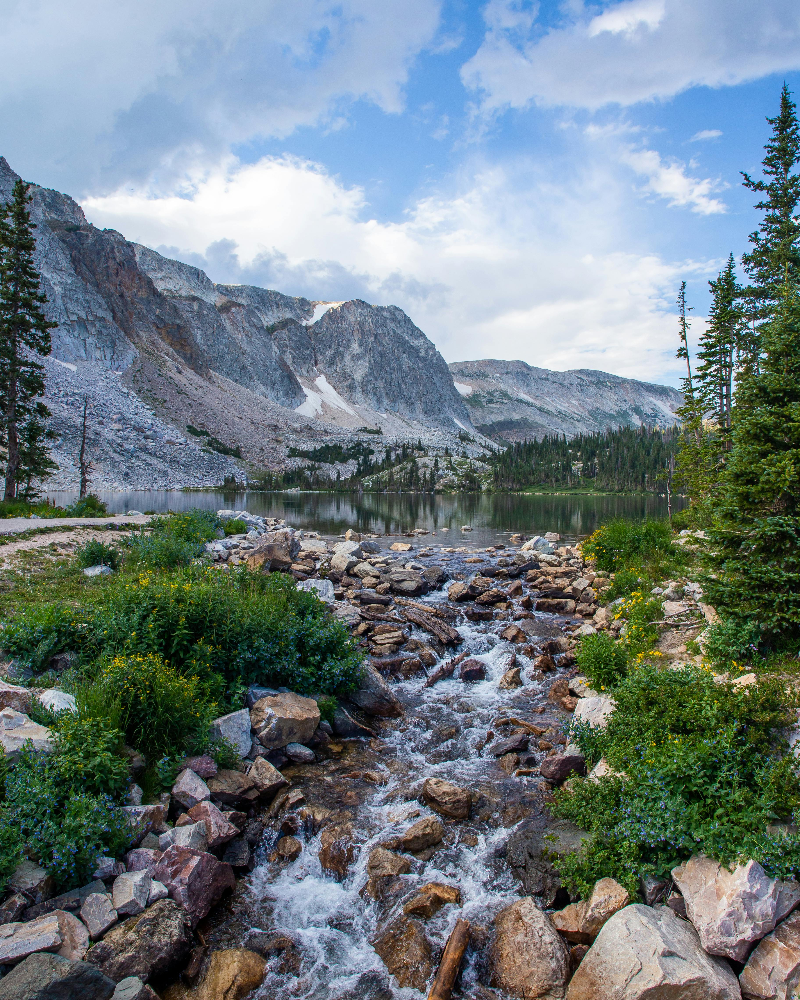
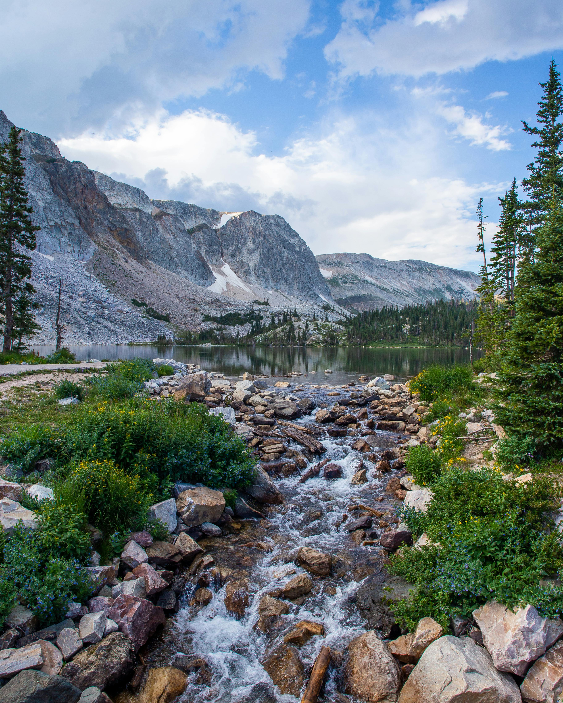
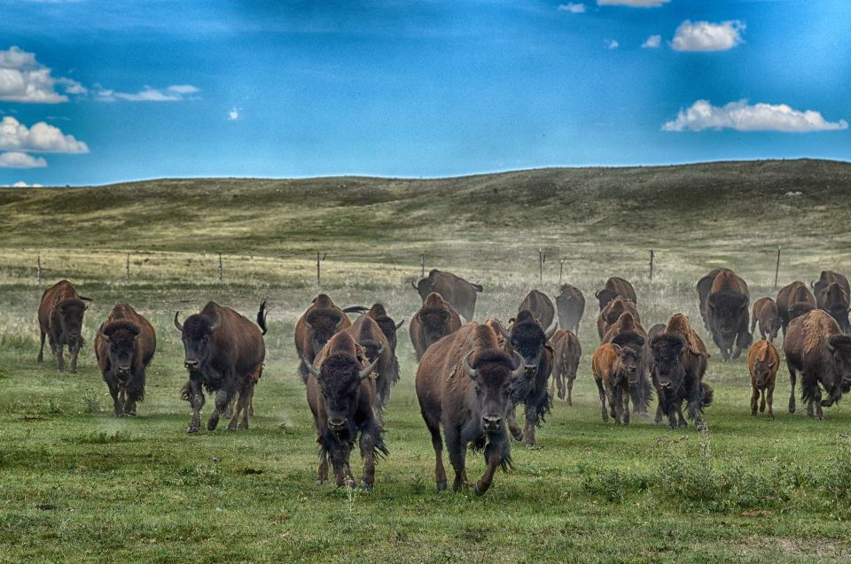
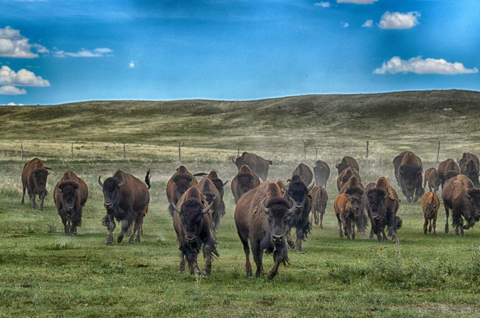

 


Torrington, Wyoming: A Gateway to the Heartland
Torrington, located in southeastern Wyoming, is a charming community known for its agricultural heritage, close-knit population, and proximity to scenic landscapes. As the county seat of Goshen County, Torrington offers a peaceful yet vibrant lifestyle, blending small-town charm with economic significance. Below is a detailed overview of Torrington's key aspects:
Demographics and Population
As of the most recent data, Torrington has an estimated population of 6,501 residents, making it one of Wyoming's smaller but thriving communities. The city's demographic breakdown is as follows: White (Non-Hispanic): 82.9% Hispanic or Latino: 13.6% Two or More Races: 2.2% Other (Non-Hispanic): 1.3% The median age in Torrington is approximately 41.7 years, reflecting a balanced mix of young families, working professionals, and retirees. (American Community Survey, 2020)
Education
Torrington values education and provides robust options for its residents: High School Graduates: Over 90% of residents aged 25 and older have completed high school. Bachelor's Degree or Higher: Approximately 20% of the population holds a bachelor's degree or higher. Eastern Wyoming College, located in Torrington, plays a pivotal role in providing workforce development programs, technical training, and higher education opportunities to the region. Source: City of Torrington(City of Torrington, 2023).
Income and Cost of Living
Torrington's economy is supported by agriculture, education, and healthcare. Key economic indicators include: Median Household Income: $49,258 Per Capita Income: $29,869 Poverty Rate: Approximately 11.4% The cost of living in Torrington is relatively affordable compared to larger cities, making it an attractive destination for families and retirees. (U.S. Census Bureau, 2020).
Housing
Torrington's housing market is characterized by its affordability and variety: Median Home Value: $150,000 Homeownership Rate: 65.8% The city features a mix of historic homes, modern builds, and agricultural properties, catering to diverse housing needs. Torrington's neighborhoods are known for their tranquility and friendly communities. Source: Census.gov
Weather
Torrington enjoys a semi-arid climate with distinct seasons: Cold Winters: Temperatures often drop below freezing, with moderate snowfall. Mild Summers: Average highs range from the mid-80s to low 90s °F. Spring and Fall: These seasons bring mild weather and occasional precipitation. The city's climate supports year-round outdoor activities, from hiking and fishing in the summer to hunting and cross-country skiing in the winter. (National Weather Service, 2023).Culture and Economy
orrington's culture is deeply rooted in its agricultural heritage, while the local economy thrives on: Agriculture: The city is a hub for farming and ranching, with Goshen County producing a significant share of Wyoming's crops and livestock. Cultural Events: Torrington hosts annual events such as the Goshen County Fair and Rodeo, celebrating the region's rural traditions. Local Businesses: Downtown Torrington features quaint shops, cafes, and markets that reflect the city's small-town charm.
Transportation
Torrington is easily accessible and serves as a gateway to scenic and historic landmarks in Wyoming: Highways: U.S. Route 85 and U.S. Route 26 connect Torrington to nearby cities and states, facilitating regional travel. Local Transit: Torrington offers bike-friendly routes and local bus services for residents and visitors. Proximity to Nature: The city is a short drive from popular destinations such as Guernsey State Park and Fort Laramie National Historic Site.(Wyoming Department of Transportation, 2023).